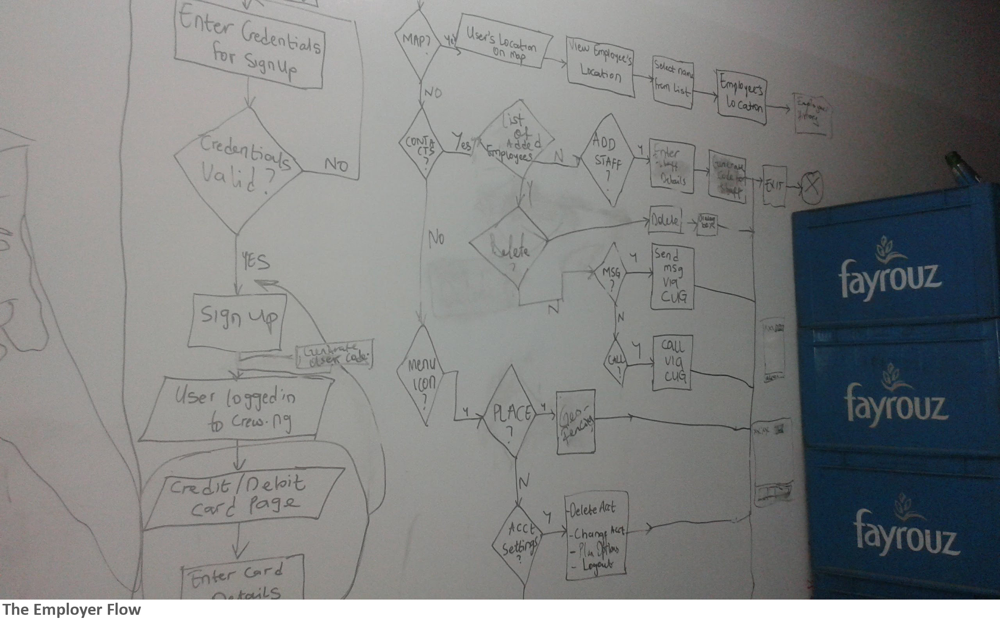

Crew is a mobile application that allows an employer (the captain) track his staff when he/she needs to e.g. a nanny responsible for looking after the children. This hedges against personal property damages due to broken trust between staff, his/her valuables and his/she.
This application had two user groups: employers with smart devices and employees with low end smart phones/feature phones.
The product goal was to allow the employer keep track of the employee, have deterrents for the employee to prevent attempts at bypassing the system while maintaining the employee's privacy outside of work hours.
By conducting user interviews, we were able to identify that most workers either lie about their location, or the status of their phone (low battery, no data plan), and employers had no way of verifying this data. This guided us to use the employee app to report this information to the employer's app, while removing the ability to alter the information sent from the empoyee's control
Also, due to the low literacy levels of these employees, we tested ways to onboard the employees. The method shown in the video- SMS with customised link to the employee to download and automatically sync both apps; and the sync code for the employer to do this manually- proved to be the best methods
To protect the employee's privacy especially after work hours, we allowed the employee to set the work hours. Also, once an employee leaves the employ of that employer, they can disconnect from the employer's tracker by simply tapping the only button on the screen. This can be seen in the screenshots below.